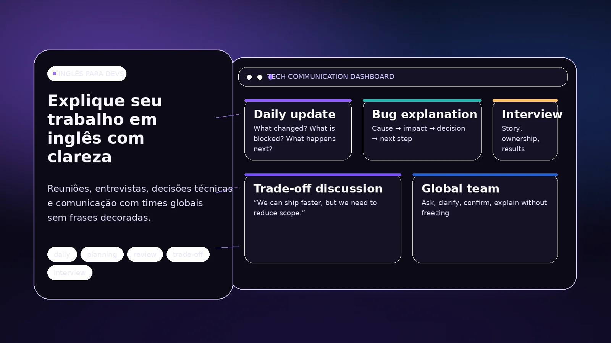

Rotina de trabalho
Vocabulário que aparece em reuniões, tarefas, alinhamentos e comunicação de equipe.
O ponto de partida continua sendo o inglês. Quando a área profissional exige vocabulário e situações específicas, esse contexto pode entrar nas aulas sem transformar o curso em treinamento técnico ou preparação artificial para uma situação isolada.

Isso pode incluir linguagem usada em reuniões, explicações de tarefas, projetos, problemas, decisões e comunicação com equipes. A necessidade de cada aluno define o quanto esse recorte profissional aparece.
Vocabulário que aparece em reuniões, tarefas, alinhamentos e comunicação de equipe.
Prática para falar sobre processos, problemas, decisões e resultados dentro do nível real do aluno.
Contato com inglês usado em documentação, mensagens e outros materiais ligados à área quando isso for relevante.
Para alunos B1+, a modalidade conversacional pode usar temas profissionais sem deixar de ser uma aula de inglês.
Um profissional de tecnologia iniciante em inglês não precisa de uma “aula de dev” diferente da base do idioma. Primeiro é preciso construir inglês suficiente para que o contexto profissional possa ser usado com qualidade.
Quando houver materiais específicos da área, eles podem ser publicados junto com os demais recursos do aluno no Portal.

O recorte profissional serve para explicar uma possibilidade dentro das aulas, não para criar um serviço que eu não ofereço.
Não. Tecnologia entra como contexto de uso do inglês. O foco continua sendo o idioma.
Não. O ensino regular atende desde o iniciante. A modalidade conversacional é oferecida a partir do B1.
Não. O peso do inglês profissional depende do que realmente for útil para o aluno.
Você pode comparar primeiro os formatos e mensalidades ou falar comigo diretamente.